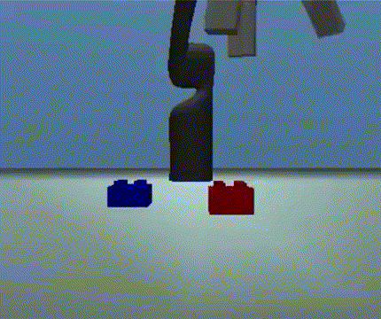
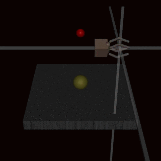

Krakovna, V., Uesato, J., Mikulik, V., Rahtz, M., Everitt, T., Kumar, R., Kenton, Z., Leike, J. y Legg, S. (2020, 21 de abril). Specification gaming: the flip side of AI ingenuity. Blog de Google DeepMind.
Una conducta que cumple la especificación literal de un objetivo sin lograr el resultado que se buscaba. Los autores reunieron unos 60 ejemplos.
¿Por qué un sistema inteligente «hace trampa» sin intención de hacerla, y de quién es la responsabilidad?


Animaciones tomadas de Krakovna et ál. (2020), Google DeepMind. Cita con fines educativos.
De dónde viene: recompensas intermedias mal diseñadas; un resultado final especificado a medias; un modelo de recompensa aprendido de personas, que también se engaña; errores del simulador.
Por qué crece: un agente más capaz encuentra soluciones más intrincadas a una especificación apenas imprecisa. Y en el mundo real podría alterar la propia especificación: la recompensa o las preferencias de las personas.
El bote del 6B aprendió a ir y venir. ¿Qué cambiarían en su recompensa para que diera vueltas? ¿Qué nueva trampa podría abrir ese cambio?
Piensen en un indicador con el que se evalúa su trabajo. ¿Cómo se podría cumplir sin cumplir su propósito? ¿Quién lo notaría, y cuándo?
Si su sistema hace «trampa» y nadie lo programó así, ¿de quién es la responsabilidad: del agente, de quien escribió la recompensa o de quien la aprobó?
Pearl, J. (2019). The seven tools of causal inference, with reflections on machine learning. Communications of the ACM 62(3), 54–60.
Trabajos independientes: al inicio de la semana 4. Proyecto: la fecha se anuncia en clase.